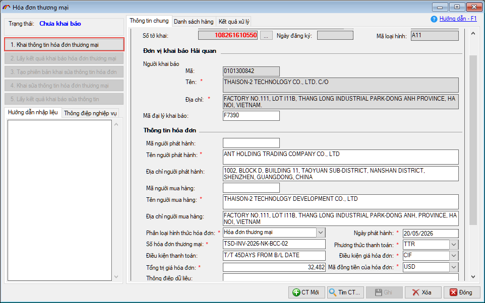
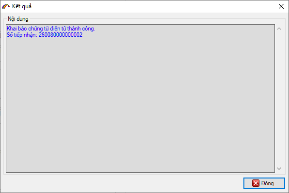
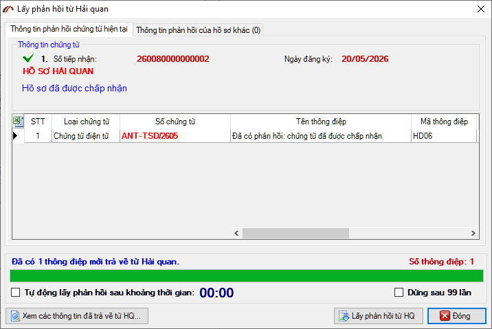
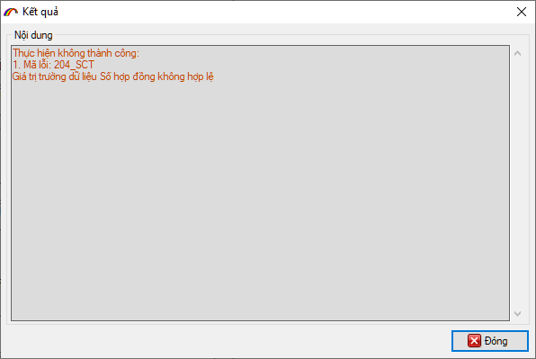
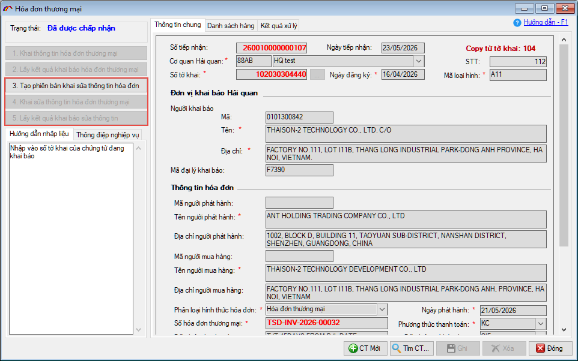
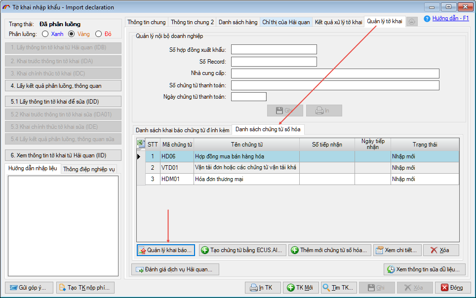
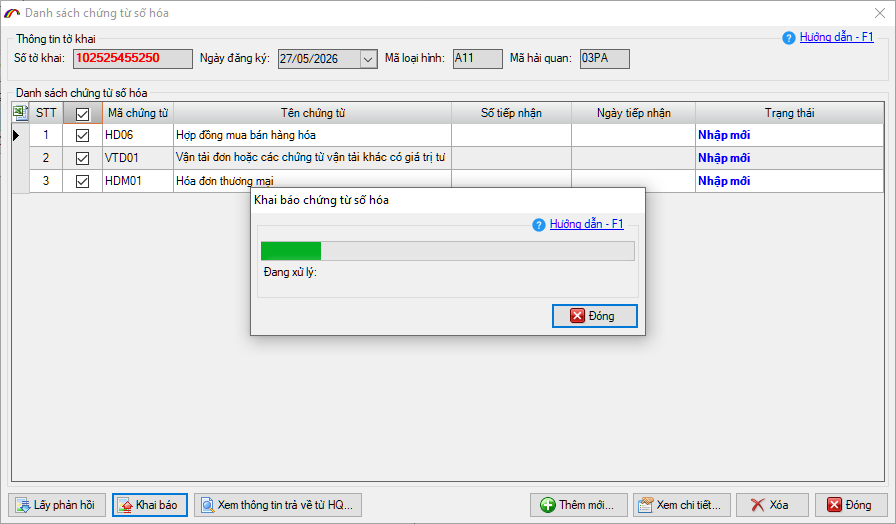
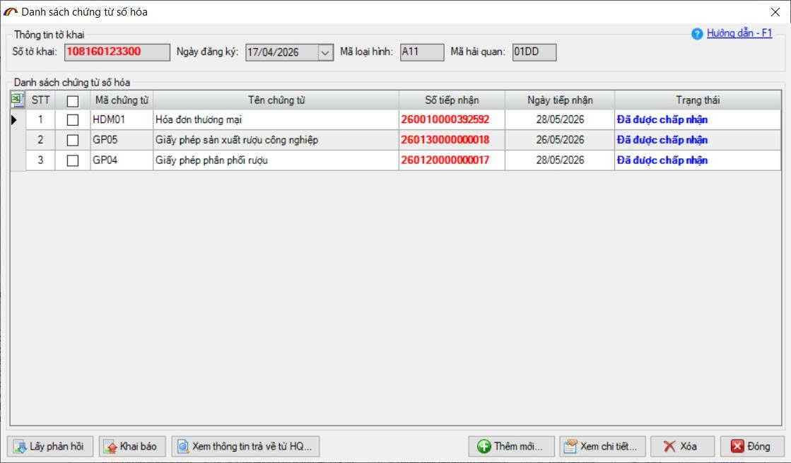

HƯỚNG DẪN
(Thực hiện khai báo chứng từ số hoá vừa tạo)
- - Khai báo và lấy phản hồi kết quả cho từng chứng từ
- - Khai báo và lấy phản hồi kết quả cho danh sách chứng từ
Sau khi đã tạo xong các chứng từ số hoá và tờ khai đã được khai báo, phân luồng. Người khai tiến hành khai chứng từ số hóa cho tờ khai theo 2 cách:
Để khai báo từng chứng từ, người khai thực hiện bằng cách mở chi tiết chứng từ, sau đó nhấn nút Khai thông tin chứng từ.

Khai thành công, hệ thống sẽ trả về số tiếp nhận:

Người khai tiếp tục nhấn nút Lấy phản hồi để nhận được kết quả chấp nhận.

Trường hợp khai báo có các chỉ tiêu không hợp lệ, hệ thống sẽ trả về thông báo lỗi cụ thể cho từng chỉ tiêu thông tin để người dùng biết để sửa lại.

Khi bản khai đã được chấp nhận, người khai có thể thực hiện tạo và khai báo sửa bằng cách sử dụng các nút nghiệp vụ 3 4 và 5:

Để khai báo và lấy phản hồi cho nhiều chứng từ cùng 1 lần, bạn thực hiện bằng cách nhấn vào Quản lý khai báo tại Danh sách chứng từ số hoá, tab Quản lý tờ khai:

Tại đây, người khai đánh dấu tích chọn vào các chứng từ cần khai báo trong danh sách, sau đó nhấn nút Khai báo để khai báo cho tất cả chứng từ đã chọn:

Sau đó nhấn nút Lấy phản hồi để phần mềm tự động lấy phản hồi kết quả khai báo cho toàn bộ chứng từ.

Thông tin số tiếp nhận, ngày tiếp nhận, trạng thái khai báo chứng từ (chấp nhận hoặc từ chối) được hiển thị chi tiết theo từng chứng từ.